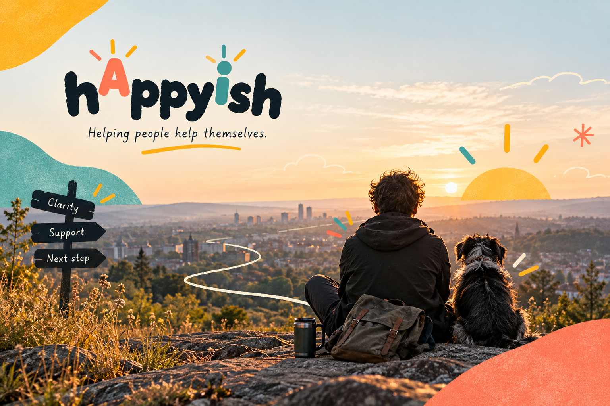

Human first. A little help goes a long way.
Helping you
help yourself.
Practical, human support for navigating a digital world.
Technology, AI, forms, emails, the thing you’ve been putting off. We work alongside you, so the next time feels a little easier.
No diagnosis needed. No technical knowledge expected.

That’s a start.
Start with the actual thing
What are you
stuck on?
You don’t need to know the name of a service. Bring the problem.
Patient people. Practical progress.
Pull up a chair.
Let’s work it out.
One-to-one mentoring built around what you need to do — at a pace that works for you.
We’re starting small, developing a short mentoring approach that helps you build confidence through real tasks.
First we show you. Then we do it together. Then you try with support. The aim? You can do more yourself.
How the mentoring works →A next step, not another dead end
We don’t
just signpost.
Being told where to go is not the same as being helped to get there.
We won’t always know the answer. We will help you work out the next step. When you need specialist support, a warm handover matters.
In the toolkit, not in charge
AI that actually helps.
Understand what it’s useful for, where it goes wrong and how to use it safely. From breaking down a task to checking an answer — with privacy and human judgement in the picture.
A clearer starting point with AI →You don’t have to fit a box
For anyone who could
use a bit of help.
Whether technology feels unfamiliar, life has been difficult, or you simply need someone patient to work through a task with you.
Who it’s for →A conversation is a good beginning
You don’t need to have it all worked out.
Tell us what you’re trying to do. We’ll work out the next step together.
Need a hand? Talk to us.